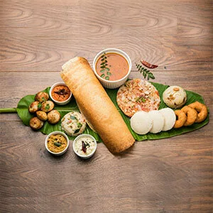
INDIAN-Dish
Idli-Dosha With Sambhar and coconut chatni
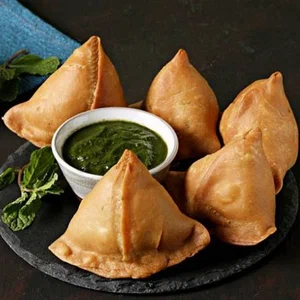
INDIAN-Dish
Samosha With Chatni
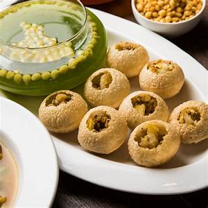
INDIAN-Dish
Rajwadi Pani Puri

Japan-Dish
Rice Balls
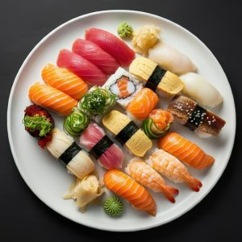
Japan-Dish
Sui-shi
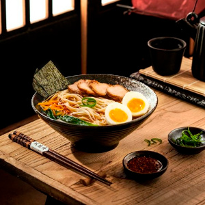
Japan-Dish
Ramen
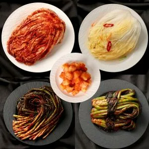
Korean-Dish
Korean kimches
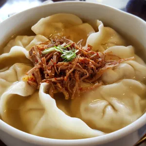
Korean-Dish
Meat Buns

Korean-Dish
Noodle Cups
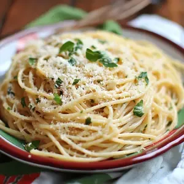
Italian-Dish
Pizza Pasta Salad
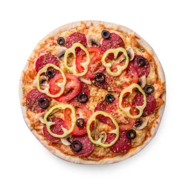
Italian-Dish
Smoky BBQ Chicken Brick Oven Pizza
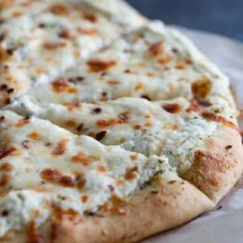
Italian-Dish
White Chesse Pizza
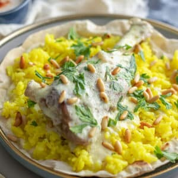
Arabic-Dish
Mansaf With Rice
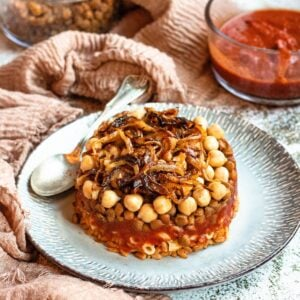
Arabic-Dish
Koshari With Pasta
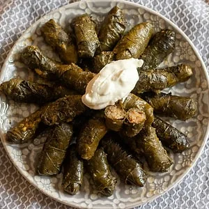